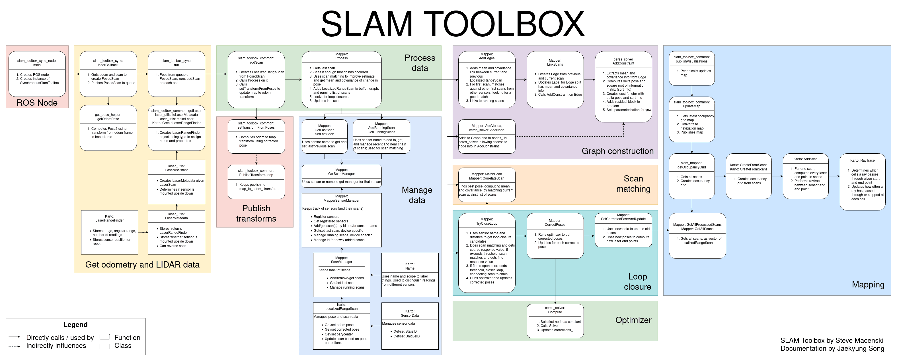
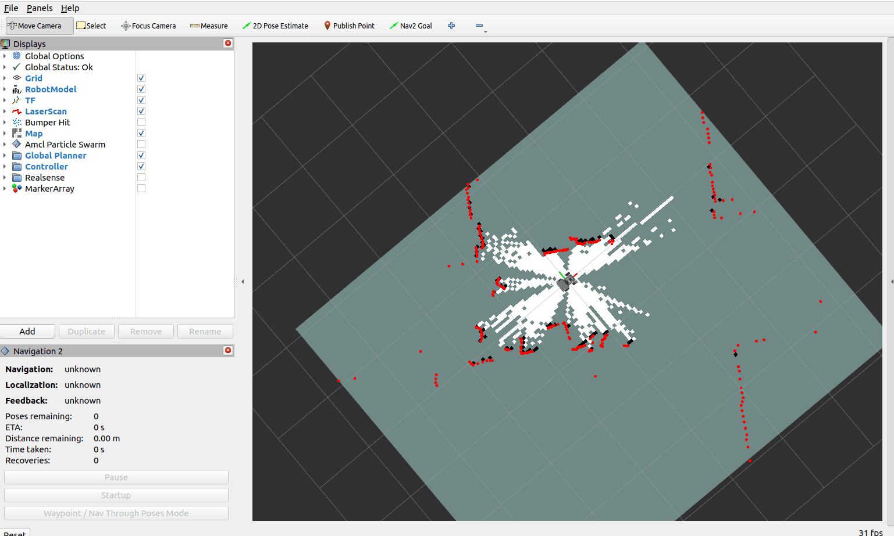
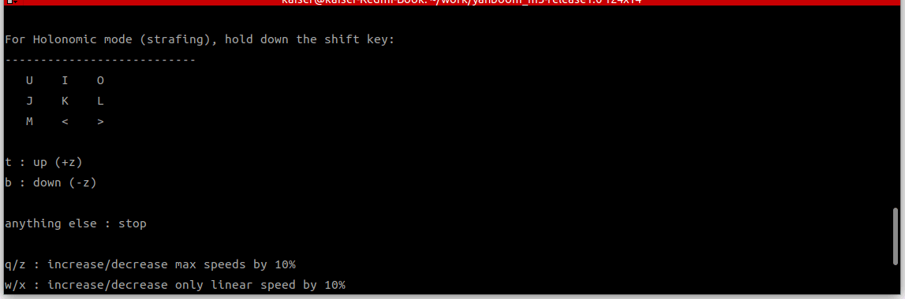
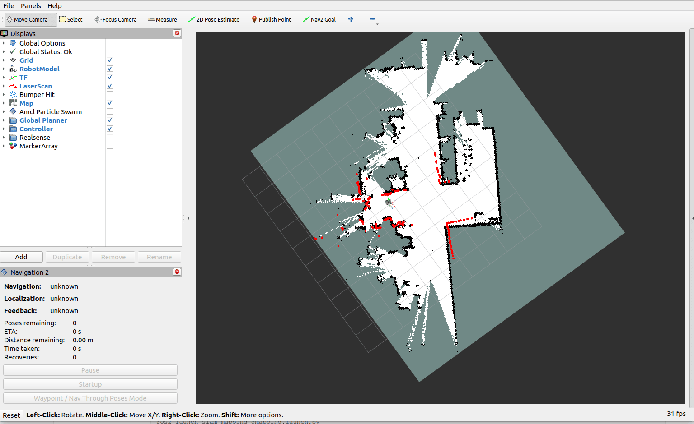
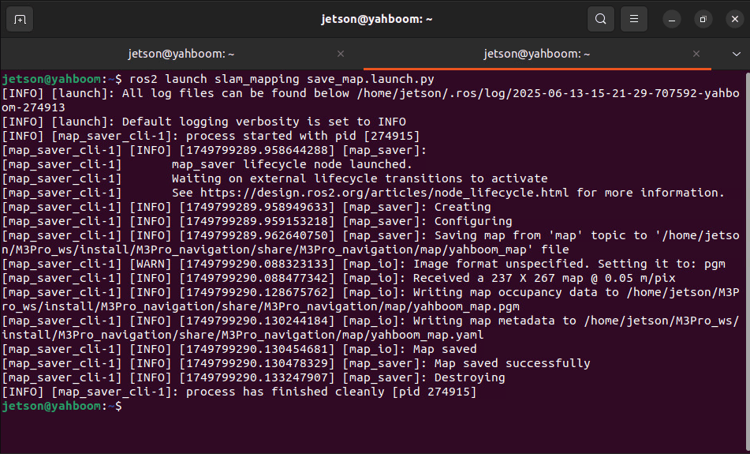
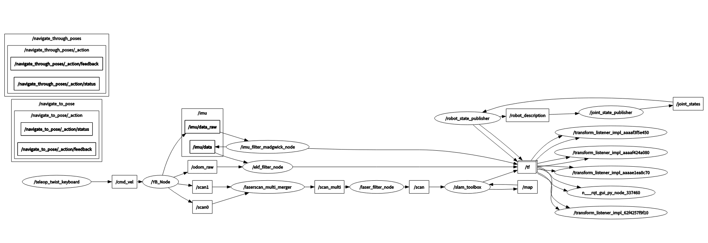
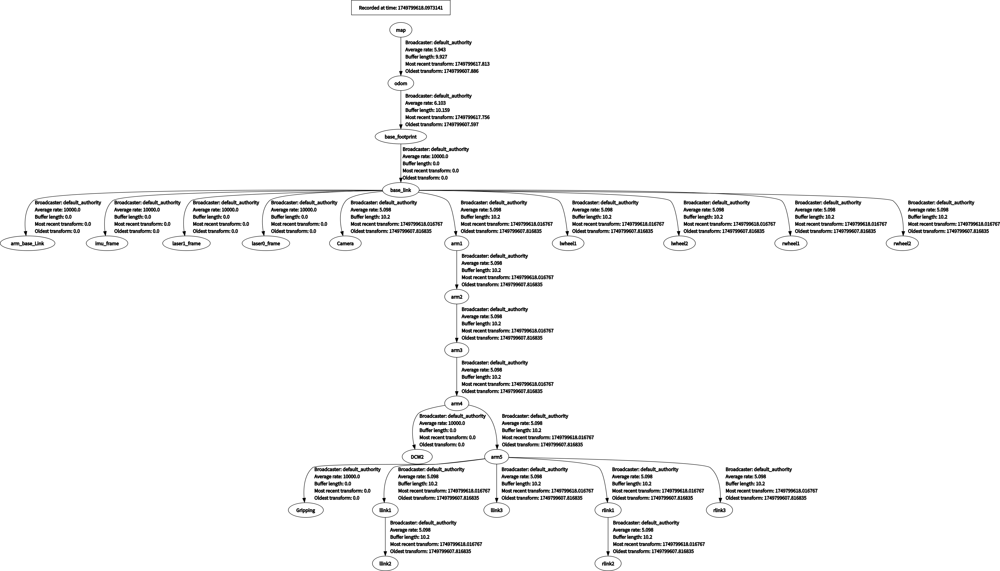

Построение карты с помощью slam_toolbox
1. Содержание урока
Изучение алгоритма SLAM-картографирования для робота с использованием slam-toolbox.
После запуска примера программы управляйте роботом с клавиатуры или геймпада для завершения построения карты и сохранения результата.
2. Введение в slam-toolbox
slam-toolbox — это открытый пакет алгоритмов 2D SLAM (одновременная локализация и построение карты) на базе ROS, применяемый преимущественно для построения карты и локализации мобильных роботов в неизвестной среде. На основе подхода оптимизации графа (Graph Optimization) он объединяет данные лазерного лидара (например, 2D LiDAR) и инерциального измерительного блока (IMU) для построения 2D-карты занятости (grid map) окружающего пространства и обновления положения робота в реальном времени.
2.1 Основные технические принципы
2.1.1 Обработка на переднем плане (сопоставление сканов лидара)
- Алгоритм GICP: оценивает относительное положение робота, итеративно вычисляя оптимальное совпадение между текущим сканом лидара и картой. По сравнению с классическим ICP, GICP вводит вероятностную модель, что делает его более устойчивым к выбросам (outliers).
- Компенсация движения: использует данные IMU для компенсации искажений сканирования лидара, возникающих во время движения робота, повышая точность сопоставления в динамических условиях.
2.1.2 Оптимизация на backend (оптимизация графа)
- Построение графа положений (pose graph): строит графовую структуру, объединяя узлы положений робота и ограничения относительных положений, получаемые из сопоставления сканов.
- Глобальная оптимизация: использует алгоритм нелинейной оптимизации (например, Ceres Solver) для оптимизации графа положений, устраняя накопленную ошибку и обеспечивая глобальную согласованность карты.

Адрес проекта на GitHub: https://github.com/SteveMacenski/slam_toolbox
3. Подготовка
3.1 Описание содержания
В этом уроке в качестве примера используется Jetson Orin NX. Для плат Raspberry Pi и Jetson Nano необходимо открыть терминал и ввести команду для входа в Docker-контейнер. После входа в контейнер вводите команды этого урока уже внутри него. Инструкции по входу в Docker-контейнер см. в руководстве к изделию [Configuration and Operation Guide] — [Entering the Docker] (для пользователей Jetson Nano и Raspberry Pi 5, см. соответствующий раздел). Для плат Orin и NX достаточно просто открыть терминал и ввести команды этого урока.
3.2 Запуск агента
Примечание: перед тестированием всех примеров необходимо сначала запустить агента в Docker. Если он уже запущен, повторно запускать его не нужно.
Введите команду в терминале робота:
sh start_agent.sh
Терминал выведет следующее сообщение, означающее успешное подключение.

4. Запуск примера
4.1 Процесс построения карты
Обратите внимание:
- При построении карты, чем медленнее скорость (в первую очередь скорость поворота), тем лучше результат. Если двигаться слишком быстро, результат будет очень плохим.
- Для контроллеров серии Jetson Nano и Raspberry Pi необходимо сначала войти в Docker-контейнер (порядок действий см. в разделе [Docker course chapter — Entering the Robot's Docker Container]).
Команда запуска построения карты в терминале робота:
ros2 launch slam_mapping slam_toolbox.launch.py
В качестве примера рассмотрим настройку на виртуальной машине: откройте терминал и запустите интерфейс визуализации RVIZ:
ros2 launch slam_view slam_view.launch.py
Команда запуска интерфейса визуализации RVIZ в терминале робота:
ros2 launch slam_mapping slam_view.launch.py

Откройте на виртуальной машине ещё один терминал и запустите узел управления с клавиатуры (также можно использовать управление с геймпада; чтобы предварительно запустить узел управления с геймпада, см. [5. Chassis Control — 2. Controller Control]):
ros2 run yahboomcar_ctrl yahboom_keyboard
Кликните мышью по окну терминала и нажмите z, чтобы снизить скорость.

Кликните мышью по окну терминала и нажмите z, чтобы снизить скорость. Нажимайте I, <, J и L для управления движением робота вперёд, назад, поворотом влево и поворотом вправо соответственно. Перемещайте робота для завершения построения карты.
4.2 Сохранение карты
Откройте на роботе новый терминал и сохраните карту.
ros2 launch slam_mapping save_map.launch.py
Сообщение в терминале «Map saved successful» означает, что карта успешно сохранена.

Путь сохранения карты следующий:
Jetson Orin Nano, Jetson Orin NX:
/home/jetson/M3Pro_ws/install/M3Pro_navigation/share/M3Pro_navigation/map
Jetson Orin Nano, Raspberry Pi:

Сначала необходимо войти в Docker.
/root/M3Pro_ws/install/M3Pro_navigation/share/M3Pro_navigation/map/
Одно изображение в формате PGM, один YAML-файл yahboom_map.yaml:
image: yahboom_map.pgm
mode: trinary
resolution: 0.05
origin: [-10, -10, 0]
negate: 0
occupied_thresh: 0.65
free_thresh: 0.25

Разбор параметров:
image: путь к файлу карты, абсолютный или относительный.mode: этот атрибут может принимать одно из значенийtrinary,scaleилиraw, в зависимости от выбранного режима. По умолчанию используетсяtrinary.resolution: разрешение карты, метры/пиксель.origin: 2D-положение (x, y, yaw) нижнего левого угла карты.yaw— поворот против часовой стрелки (yaw=0означает отсутствие поворота). В настоящее время многие части системы значениеyawигнорируют.negate: инвертировать ли смысл белого/чёрного и свободного/занятого (на интерпретацию порогов не влияет).occupied_thresh: пиксели с вероятностью занятости выше этого порога считаются полностью занятыми.free_thresh: пиксели с вероятностью занятости ниже этого порога считаются полностью свободными.
5. Разбор узлов
5.1 Отображение вычислительного графа узлов
ros2 run rqt_graph rqt_graph
5.2 Преобразования TF
Выполните в терминале виртуальной машины:
ros2 run rqt_tf_tree rqt_tf_tree
Размер изображения слишком большой; оригинальное изображение можно посмотреть в папке этого урока.

5.3 Подробности узла slam-toolbox
ros2 node info /slam_toolbox
Введите указанную выше команду в терминале, чтобы посмотреть топики подписки и публикации, связанные с узлом gmapping.
/slam_toolbox
Subscribers:
/map: nav_msgs/msg/OccupancyGrid
/parameter_events: rcl_interfaces/msg/ParameterEvent
/scan: sensor_msgs/msg/LaserScan
/slam_toolbox/feedback: visualization_msgs/msg/InteractiveMarkerFeedback
Publishers:
/map: nav_msgs/msg/OccupancyGrid
/map_metadata: nav_msgs/msg/MapMetaData
/parameter_events: rcl_interfaces/msg/ParameterEvent
/pose: geometry_msgs/msg/PoseWithCovarianceStamped
/rosout: rcl_interfaces/msg/Log
/slam_toolbox/graph_visualization: visualization_msgs/msg/MarkerArray
/slam_toolbox/scan_visualization: sensor_msgs/msg/LaserScan
/slam_toolbox/update: visualization_msgs/msg/InteractiveMarkerUpdate
/tf: tf2_msgs/msg/TFMessage
Service Servers:
/slam_toolbox/clear_changes: slam_toolbox/srv/Clear
/slam_toolbox/describe_parameters: rcl_interfaces/srv/DescribeParameters
/slam_toolbox/deserialize_map: slam_toolbox/srv/DeserializePoseGraph
/slam_toolbox/dynamic_map: nav_msgs/srv/GetMap
/slam_toolbox/get_interactive_markers: visualization_msgs/srv/GetInteractiveMarkers
/slam_toolbox/get_parameter_types: rcl_interfaces/srv/GetParameterTypes
/slam_toolbox/get_parameters: rcl_interfaces/srv/GetParameters
/slam_toolbox/list_parameters: rcl_interfaces/srv/ListParameters
/slam_toolbox/manual_loop_closure: slam_toolbox/srv/LoopClosure
/slam_toolbox/pause_new_measurements: slam_toolbox/srv/Pause
/slam_toolbox/save_map: slam_toolbox/srv/SaveMap
/slam_toolbox/serialize_map: slam_toolbox/srv/SerializePoseGraph
/slam_toolbox/set_parameters: rcl_interfaces/srv/SetParameters
/slam_toolbox/set_parameters_atomically: rcl_interfaces/srv/SetParametersAtomically
/slam_toolbox/toggle_interactive_mode: slam_toolbox/srv/ToggleInteractive
Service Clients:
Action Servers:
Action Clients: